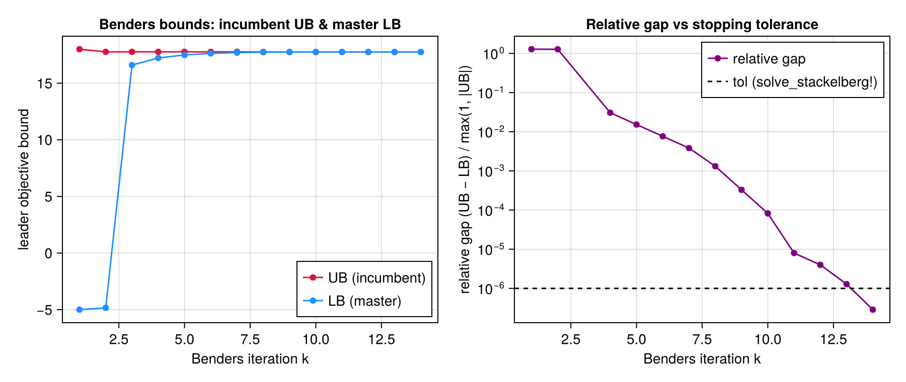

Rung 6 — Stackelberg-Benders (Planning)
This page is the PVAL-03 literate proof for the planning layer's single-distributor Stackelberg equilibrium (PLAN-04/PLAN-05/PLAN-06/PLAN-07/PVAL-01): it executes the real solve_stackelberg! hand-rolled Benders loop end-to-end during the Documenter build, on a toy instance ECONOMICALLY EQUIVALENT to the one Phase 11's permanent certification regression uses, so the numbers below are a genuinely solved answer — never a hardcoded literal copied from a goldens/test file (mirrors the admm.jl/ pricing_dlmp.jl reproducibility-proof pattern, threat T-14-05).
The PSR problem-number map — planning-layer symbols
The bilevel game the leader/follower/master triple below solves, mapped to the PSR N1–N2 note's own problem numbers and this project's src/planning/ code symbols:
- Follower LP
α(z)(transmission-reinforcement investment, given a trial coupling flowz) —build_followerconstructs it ONCE;solve_follower!re-solves it at each Benders trial. - Benders master (the leader's epigraph relaxation over
y, accumulating optimality/feasibility cuts from both the follower and the operational oracle) —build_masterconstructs it ONCE;add_optimality_cut!/add_feasibility_cut!append cuts;solve_master!re-solves it. - The outer Benders loop tying the two together against the REUSED v1 operational welfare oracle —
solve_stackelberg!(the entrypoint this page calls live below).
The coupling seam — z ↔ pimport/pag, λj ↔ πs
| Planning-layer symbol | Operational-layer symbol | Where it lives |
|---|---|---|
z (the Benders trial coupling flow) | p_import at the oracle's frontier / the aggregator's own net import p_ag | PlanningOracle's pin[t]: p_import[t] == z[t] (build_planning_oracle); the follower's own coupling[t]: x_op[t] == z[t] (build_follower) |
λ_j[t] ↔ π_s (the coupling-constraint dual) | the DADP/DLMP the v1 operational layer already reports | the oracle's pin dual (oracle_res.π, the optimality-cut gradient) and the follower's own coupling dual (follower_res.π_s) |
The Phase 11 empirical certification story (narrated, not re-executed)
The leader/follower role assignment and the coupling-dual sign convention used by solve_stackelberg! are NOT assumed — they were independently CERTIFIED in test/test_planning_certification.jl (a permanent [:planning] regression, retained forever) against an INDEPENDENT BilevelJuMP MPEC reduction of the SAME toy instance reused (in economically-equivalent form) below. Two structurally-different reformulations — BilevelJuMP.StrongDualityMode (strong-duality equality) and BilevelJuMP.ProductMode (epsilon-relaxed bilinear-product complementarity) — agree with EACH OTHER and with a hand-worked enumeration (y* = z* = 0.7, total cost -0.245); a BilevelJuMP.BigMMode + HiGHS attempt is retained ONLY as a documented, asserted NEGATIVE regression (its Big-M reformulation combined with this instance's quadratic upper-level term produces a genuine MIQP that HiGHS categorically cannot solve, at ANY Big-M bound). solve_stackelberg! (the production Benders loop) agrees with BOTH successfully-solving reformulations and the hand enumeration — NO sign flip was ever required in follower.jl/benders.jl.
This page deliberately does NOT re-execute that certification live: it imports only TSODSO (no using BilevelJuMP, using HiGHS, or using Ipopt anywhere in this file) so the published docs site never depends on a validation-oracle-only, test-only package — see test/test_planning_certification.jl for the full certification proof.
using TSODSO
using TSODSO: Bus, Branch, FeederBuilding a toy instance economically equivalent to the certified fixture
test/test_planning_certification.jl's own toy fixture uses a test-only ToyElasticDevice (utility U(p) = a·p − (b/2)·p², a=6.0, b=1.0, Pmax=10.0) at bus 2 of a near-lossless 2-bus feeder — a test-only struct not reachable from docs/ without adding a new dependency. The PUBLIC Deferrable device's own utility (thesis eq. 3.12) is U(p) = −(b/2)·(p − E)², which expands to b·E·p − (b/2)·p² − (b/2)·E² — the elastic device's a·p − (b/2)·p² shape whenever a = b·E, PLUS the constant −(b/2)·E². Deferrable's IMPLEMENTED utility KEEPS that constant — it is inherent in the squared form (Deferrable.jl builds -(b/2)*(Σp − E)^2 verbatim; RESEARCH A5 only sanctions dropping eq. 3.12's separate additive constant c, NOT this expansion term). Setting E = 6.0, b = 1.0 (so a = b·E = 6.0, matching the certified fixture's own a) with a single-hour window [1,1] (T = 1) therefore reproduces the certified fixture's economics UP TO AN ADDITIVE CONSTANT (b/2)·E² = 18 on the leader's total cost: the equilibrium point (y*, z*) and every price/dual are IDENTICAL (an additive constant never moves an argmax), but every OBJECTIVE-LEVEL quantity on this page is shifted by +18 relative to the certified fixture — expect UB ≈ −0.245 + 18 = 17.755 below, NOT the certified fixture's own −0.245. (The offset also inflates |UB| inside solve_stackelberg!'s relative-gap normalizer max(1, |UB|), so the SAME tol = 1e-6 stops this instance a few 1e-3 short of the certified z* = 0.7 — see the z note below.) All of this uses ONLY public TSODSO API.
buses = [Bus(1, 0.95, 1.05, true), Bus(2, 0.95, 1.05, false)]
branches = [Branch(1, 2, 1e-3, 1e-3, SMAX_NO_LIMIT)]
feeder = Feeder(buses, branches, 1)
T = 1
dev = Deferrable(2, 1, 1, 6.0, 10.0, 1.0)
agg = Aggregator(2, 0.9, [dev], fill(0.0, T))
λ₀ = [4.0]
follower_kwargs = (; corridor_cap = 2.0, x_inv_max = 2.0, c_inv = 1.0, c_op = [0.5])
master_kwargs = (; c_y = 0.3, y_max = 8.0, α_op_lb = -5.0, α_x_lb = 0.0)(c_y = 0.3, y_max = 8.0, α_op_lb = -5.0, α_x_lb = 0.0)Solving the Stackelberg equilibrium live
checkpoint_dir must be writable — mktempdir() gives every doc build a fresh, disposable checkpoint directory. solve_stackelberg! builds the oracle/follower/master ONCE, then iterates the Benders loop to the documented relative UB/LB gap tolerance.
checkpoint_dir = mktempdir()
result = solve_stackelberg!(
feeder,
LinDistFlow(),
[agg];
λ₀ = λ₀,
T = T,
follower_kwargs = follower_kwargs,
master_kwargs = master_kwargs,
tol = 1e-6,
max_iter = 100,
checkpoint_dir = checkpoint_dir,
)(y = 0.6984952393272271, z = [0.6984952393272271], UB = 17.755001132152355, LB = 17.754996052417795, gap = 2.8610161848424317e-7, iters = 14, oracle = PlanningOracle{Vector{JuMP.VariableRef}, Vector{JuMP.ConstraintRef{JuMP.Model, MathOptInterface.ConstraintIndex{MathOptInterface.ScalarAffineFunction{Float64}, MathOptInterface.EqualTo{Float64}}, JuMP.ScalarShape}}, Vector{JuMP.VariableRef}, Feeder{Float64}}(A JuMP Model
├ solver: Clarabel
├ objective_sense: MAX_SENSE
│ └ objective_function_type: JuMP.QuadExpr
├ num_variables: 9
├ num_constraints: 14
│ ├ JuMP.AffExpr in MOI.EqualTo{Float64}: 6
│ ├ JuMP.AffExpr in MOI.LessThan{Float64}: 1
│ ├ JuMP.VariableRef in MOI.EqualTo{Float64}: 1
│ ├ JuMP.VariableRef in MOI.GreaterThan{Float64}: 2
│ ├ JuMP.VariableRef in MOI.LessThan{Float64}: 2
│ └ JuMP.VariableRef in MOI.Parameter{Float64}: 2
└ Names registered in the model
└ :P, :Q, :balance_p, :balance_q, :p_import, :pin, :q_import, :v, :vdrop, :z, ModelContext(A JuMP Model
├ solver: Clarabel
├ objective_sense: MAX_SENSE
│ └ objective_function_type: JuMP.QuadExpr
├ num_variables: 9
├ num_constraints: 14
│ ├ JuMP.AffExpr in MOI.EqualTo{Float64}: 6
│ ├ JuMP.AffExpr in MOI.LessThan{Float64}: 1
│ ├ JuMP.VariableRef in MOI.EqualTo{Float64}: 1
│ ├ JuMP.VariableRef in MOI.GreaterThan{Float64}: 2
│ ├ JuMP.VariableRef in MOI.LessThan{Float64}: 2
│ └ JuMP.VariableRef in MOI.Parameter{Float64}: 2
└ Names registered in the model
└ :P, :Q, :balance_p, :balance_q, :p_import, :pin, :q_import, :v, :vdrop, :z, Dict{Symbol, Any}(:balance_p => JuMP.ConstraintRef{JuMP.Model, MathOptInterface.ConstraintIndex{MathOptInterface.ScalarAffineFunction{Float64}, MathOptInterface.EqualTo{Float64}}, JuMP.ScalarShape}[balance_p[1,1] : -P[1,1] + p_import[1] = 0; balance_p[2,1] : P[1,1] - _[7] - _[8] = 0;;], :balance_q => JuMP.ConstraintRef{JuMP.Model, MathOptInterface.ConstraintIndex{MathOptInterface.ScalarAffineFunction{Float64}, MathOptInterface.EqualTo{Float64}}, JuMP.ScalarShape}[balance_q[1,1] : -Q[1,1] + q_import[1] = 0; balance_q[2,1] : Q[1,1] - 0.48432210483785254 _[7] = 0;;]), Dict{Symbol, Any}(:Rp => JuMP.AffExpr[-P[1,1] + p_import[1]; P[1,1] - _[8] - _[7];;], :Rq => JuMP.AffExpr[-Q[1,1] + q_import[1]; Q[1,1] - 0.48432210483785254 _[7];;]), Dict{Symbol, Any}(:T => 1, :p_import => JuMP.VariableRef[p_import[1]], :agg_device_vars => Dict{Int64, Vector{Any}}(2 => [(p = JuMP.VariableRef[_[8]],)]), :feeder => Feeder{Float64}(Bus{Float64}[Bus{Float64}(1, 0.95, 1.05, true), Bus{Float64}(2, 0.95, 1.05, false)], Branch{Float64}[Branch{Float64}(1, 2, 0.001, 0.001, 99.0)], 1), :problem_class => QP(), :objective => -0.5 _[8]² + 6 _[8] - 18, :q_import => JuMP.VariableRef[q_import[1]], :pf_vars => (v = JuMP.VariableRef[v[1,1]; v[2,1];;], P = JuMP.VariableRef[P[1,1];;], Q = JuMP.VariableRef[Q[1,1];;]))), JuMP.VariableRef[z[1]], JuMP.ConstraintRef{JuMP.Model, MathOptInterface.ConstraintIndex{MathOptInterface.ScalarAffineFunction{Float64}, MathOptInterface.EqualTo{Float64}}, JuMP.ScalarShape}[pin[1] : p_import[1] - z[1] = 0], JuMP.VariableRef[p_import[1]], 2, 1, Feeder{Float64}(Bus{Float64}[Bus{Float64}(1, 0.95, 1.05, true), Bus{Float64}(2, 0.95, 1.05, false)], Branch{Float64}[Branch{Float64}(1, 2, 0.001, 0.001, 99.0)], 1), [4.0]), follower = FollowerLP{Vector{JuMP.VariableRef}, Vector{JuMP.ConstraintRef{JuMP.Model, MathOptInterface.ConstraintIndex{MathOptInterface.ScalarAffineFunction{Float64}, MathOptInterface.EqualTo{Float64}}, JuMP.ScalarShape}}}(A JuMP Model
├ solver: HiGHS
├ objective_sense: MIN_SENSE
│ └ objective_function_type: JuMP.AffExpr
├ num_variables: 3
├ num_constraints: 6
│ ├ JuMP.AffExpr in MOI.EqualTo{Float64}: 1
│ ├ JuMP.AffExpr in MOI.LessThan{Float64}: 1
│ ├ JuMP.VariableRef in MOI.GreaterThan{Float64}: 2
│ ├ JuMP.VariableRef in MOI.LessThan{Float64}: 1
│ └ JuMP.VariableRef in MOI.Parameter{Float64}: 1
└ Names registered in the model
└ :coupling, :invest_op, :x_inv, :x_op, :z, x_inv, JuMP.VariableRef[x_op[1]], JuMP.VariableRef[z[1]], JuMP.ConstraintRef{JuMP.Model, MathOptInterface.ConstraintIndex{MathOptInterface.ScalarAffineFunction{Float64}, MathOptInterface.EqualTo{Float64}}, JuMP.ScalarShape}[coupling[1] : x_op[1] - z[1] = 0], 1, 2.0, 2.0), master = BendersMaster{JuMP.VariableRef, Vector{JuMP.VariableRef}, JuMP.VariableRef, JuMP.VariableRef}(A JuMP Model
├ solver: HiGHS
├ objective_sense: MIN_SENSE
│ └ objective_function_type: JuMP.AffExpr
├ num_variables: 4
├ num_constraints: 33
│ ├ JuMP.AffExpr in MOI.GreaterThan{Float64}: 27
│ ├ JuMP.AffExpr in MOI.LessThan{Float64}: 2
│ ├ JuMP.VariableRef in MOI.GreaterThan{Float64}: 3
│ └ JuMP.VariableRef in MOI.LessThan{Float64}: 1
└ Names registered in the model
└ :box_hi, :box_lo, :y_inv, :z, :α_op, :α_x, y_inv, JuMP.VariableRef[z[1]], α_op, α_x, 1, 0.3, Any[(kind = :optimality, epigraph = :op, cost_k = 18.0, grad_k = [-42.340919078960475], z_k = [-0.0]), (kind = :optimality, epigraph = :x, cost_k = 0.0, grad_k = [-0.0], z_k = [-0.0]), (kind = :optimality, epigraph = :op, cost_k = 17.061118918575207, grad_k = [-1.4567902539112176], z_k = [0.5432097484021993]), (kind = :optimality, epigraph = :x, cost_k = 0.5432097484021993, grad_k = [1.0], z_k = [0.5432097484021993]), (kind = :feasibility, v_k = 2.0, u_k = [0.5], z_k = [8.0]), (kind = :optimality, epigraph = :op, cost_k = 18.0, grad_k = [1.9999999998159734], z_k = [4.0]), (kind = :optimality, epigraph = :x, cost_k = 4.0, grad_k = [1.0], z_k = [4.0]), (kind = :optimality, epigraph = :op, cost_k = 16.03688460350574, grad_k = [0.2716048724658385], z_k = [2.271604872952382]), (kind = :optimality, epigraph = :x, cost_k = 2.271604872952382, grad_k = [1.0], z_k = [2.271604872952382]), (kind = :optimality, epigraph = :op, cost_k = 16.17558304854898, grad_k = [-0.5925926916016322], z_k = [1.4074073092773183]) … (kind = :optimality, epigraph = :op, cost_k = 16.838192942519115, grad_k = [-1.2947532159113138], z_k = [0.705246786048319]), (kind = :optimality, epigraph = :x, cost_k = 0.705246786048319, grad_k = [1.0], z_k = [0.705246786048319]), (kind = :optimality, epigraph = :op, cost_k = 16.873523941137673, grad_k = [-1.32175939096475], z_k = [0.6782406110508151]), (kind = :optimality, epigraph = :x, cost_k = 0.6782406110508151, grad_k = [1.0], z_k = [0.6782406110508151]), (kind = :optimality, epigraph = :op, cost_k = 16.855767277741553, grad_k = [-1.3082563054246186], z_k = [0.691743696562833]), (kind = :optimality, epigraph = :x, cost_k = 0.691743696562833, grad_k = [1.0], z_k = [0.691743696562833]), (kind = :optimality, epigraph = :op, cost_k = 16.84695732102696, grad_k = [-1.301504762646278], z_k = [0.6984952393272271]), (kind = :optimality, epigraph = :x, cost_k = 0.6984952393272271, grad_k = [1.0], z_k = [0.6984952393272271]), (kind = :optimality, epigraph = :op, cost_k = 16.84256943636819, grad_k = [-1.2981289912185363], z_k = [0.7018710107480226]), (kind = :optimality, epigraph = :x, cost_k = 0.7018710107480226, grad_k = [1.0], z_k = [0.7018710107480226])]), trace = BendersTrace([1, 2, 3, 4, 5, 6, 7, 8, 9, 10, 11, 12, 13, 14], [-5.0, -4.837037075479341, 16.598139554587355, 17.22530057023222, 17.496296081060933, 17.631793836499, 17.6995427142488, 17.73341715316952, 17.750354372660283, 17.75355509751181, 17.754872068812666, 17.75494291658687, 17.75497834047402, 17.754996052417795], [18.0, 17.767291591498065, 17.767291591498065, 17.767291591498065, 17.767291591498065, 17.767291591498065, 17.767291591498065, 17.756755822595863, 17.75618903991688, 17.755013764381932, 17.755013764381932, 17.755013764381932, 17.755001132152355, 17.755001132152355], [1.2777777777777777, 1.2722439180203438, NaN, 0.030504988251850107, 0.015252494114905363, 0.007626247045098471, 0.0038131235084633876, 0.0013143543595190664, 0.00032859907289115416, 8.21552091977262e-5, 7.980594729231847e-6, 3.990297951998797e-6, 1.28367653524718e-6, 2.8610161848424317e-7], [:optimality, :optimality, :feasibility, :optimality, :optimality, :optimality, :optimality, :optimality, :optimality, :optimality, :optimality, :optimality, :optimality, :optimality], [2, 4, 5, 7, 9, 11, 13, 15, 17, 19, 21, 23, 25, 27], [:OPTIMAL, :OPTIMAL, :OPTIMAL, :OPTIMAL, :OPTIMAL, :OPTIMAL, :OPTIMAL, :OPTIMAL, :OPTIMAL, :OPTIMAL, :OPTIMAL, :OPTIMAL, :OPTIMAL, :OPTIMAL], [:OPTIMAL, :OPTIMAL, :not_solved, :OPTIMAL, :OPTIMAL, :OPTIMAL, :OPTIMAL, :OPTIMAL, :OPTIMAL, :OPTIMAL, :OPTIMAL, :OPTIMAL, :OPTIMAL, :OPTIMAL], [0, 0, 0, 0, 0, 0, 0, 0, 0, 0, 0, 0, 0, 0], [0, 0, 0, 0, 0, 0, 0, 0, 0, 0, 0, 0, 0, 0], [0.007173225, 0.0038132059999999995, 0.001661692, 0.002596246, 0.00258006, 0.002833372, 0.0027636579999999996, 0.002648433, 0.002673992, 0.002633582, 0.0025862789999999995, 0.0026271629999999996, 0.002790158, 0.002587552], 14), nogood_count = 0, converged_via = :clean)Validation — a genuinely converged Benders gap
The converged relative UB/LB gap (never a hardcoded tolerance echo — the loop's own termination criterion):
result.gap2.8610161848424317e-7The leader's converged flexibility investment y:
result.y0.6984952393272271The converged coupling flow z — economically, this instance reproduces the SAME ballpark as the certified fixture's own hand-enumerated z* = 0.7 (see the certification narrative above): the underlying economics are identical by construction UP TO the +18 additive constant discussed above, and that constant's inflation of |UB| in the relative-gap normalizer max(1, |UB|) is exactly why the converged z here sits a few 1e-3 from 0.7 rather than matching it to solver precision (the same tol = 1e-6 is effectively ~17.8× looser on this instance's gap). The exact digits below come from THIS live solve, not copied from test_planning_certification.jl:
result.z1-element Vector{Float64}:
0.6984952393272271The converged upper bound — the leader's total cost at the incumbent FOR THIS instance's Deferrable utility, i.e. the certified fixture's hand-enumerated −0.245 SHIFTED by the kept constant (b/2)·E² = 18 (expect ≈ 17.755, NOT −0.245):
result.UB17.755001132152355The offset-corrected leader cost — subtracting the (b/2)·E² constant makes it directly comparable to the certified fixture's own hand-enumerated total cost −0.245:
result.UB - 0.5 * 1.0 * 6.0^2-0.24499886784764513Benders convergence figure (CairoMakie)
The canonical Benders picture, drawn from result.trace — the per-iteration BendersTrace ledger solve_stackelberg! recorded WHILE it ran (plan 12-01, src/planning/trace.jl) — so no additional solve happens here; both panels read only the already-recorded, JuMP-free ledger. Left: the incumbent upper bound UB and the relaxed master's lower bound LB close on each other as cuts accumulate. Right: the relative gap (UB − LB)/max(1, |UB|) — the loop's OWN stopping quantity, never a re-derived one — decays below the tol = 1e-6 passed to solve_stackelberg! above, on a log axis. UB = Inf (before the first optimality iteration) and gap = NaN (every feasibility-branch row) are legitimate trace sentinels, NOT defects (see BendersTrace's docstring) — they are masked out of the plotted series here, never guarded away in the ledger itself. The max.(·, eps()) floor mirrors the package's own TSODSOMakieExt log-axis guard: a gap that converges to exactly 0.0 maps to log10(0) = -Inf, which Makie rejects — clamping degrades it gracefully to the axis floor instead of crashing the docs build.
using CairoMakie
trace = result.trace
ks = trace.iter_trace
ub_mask = isfinite.(trace.UB_trace)
gap_mask = .!isnan.(trace.gap_trace)
fig = Figure(size = (900, 380))
ax_bounds = Axis(
fig[1, 1];
xlabel = "Benders iteration k",
ylabel = "leader objective bound",
title = "Benders bounds: incumbent UB & master LB",
)
scatterlines!(
ax_bounds,
ks[ub_mask],
trace.UB_trace[ub_mask];
label = "UB (incumbent)",
color = :crimson,
)
scatterlines!(ax_bounds, ks, trace.LB_trace; label = "LB (master)", color = :dodgerblue)
axislegend(ax_bounds; position = :rb)
ax_gap = Axis(
fig[1, 2];
xlabel = "Benders iteration k",
ylabel = "relative gap (UB − LB) / max(1, |UB|)",
yscale = log10,
title = "Relative gap vs stopping tolerance",
)
scatterlines!(
ax_gap,
ks[gap_mask],
max.(trace.gap_trace[gap_mask], eps());
label = "relative gap",
color = :purple,
)
hlines!(
ax_gap,
[1e-6];
label = "tol (solve_stackelberg!)",
color = :black,
linestyle = :dash,
)
axislegend(ax_gap; position = :rt)
fig
This page was generated using Literate.jl.